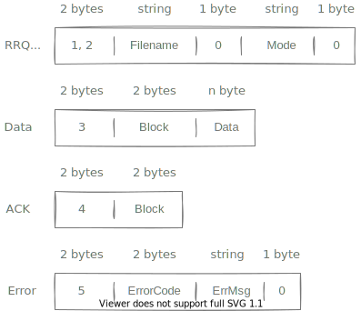

Introduction
Trivial File Transfer Protocol (TFTP) is a simple lockstep File Transfer Protocol which allows a client to get a file from or put a file onto a remote host.
TFTP is designed to be small and easy to implement. Therefore, It's a nice protocol to studying about network.
Becouse of simplicity, TFTP use very small memory footprint. Ideal for embedded systems.
Today, TFTP is virtually unused for Internet transfers, Generally only used on local area networks (LAN)
It implemented on top of the UDP/IP protocols using well-known port number 69.
Details
No more talk! 🤫 I assume you have some basic programing knowledge, We will use Rust 🚀, But no rust specific knowledge required.
Enums in rust are algebraic data type, You can think of it as discriminated unions.
We can then perform pattern matching on enum, Ignore &'a for now. ⌚
Request
The client first requests the server to read or write some data. At wellknown port 69.
Request containing the filename, transfer mode and optionally any negotiated option. (We willn't discuss those options in this tutorial)
Data Transfer
Based on request, The server or client sends data to the other endpoint.
The data is sent in fixed length blocks of 512 bytes by default or the number specified in the blocksize negotiated option.
The last data block must be less than the negotiated or default blocksize (which is 512) to signals the end of the transfer.
What heppens when the last block is exact block sized data?
If that happens, endpoint sends 0 sized packet to signal the end of the transfer.
Initially, block number is 1. On each transfer, the block number is incremented by one.
What happens when the block number is exhausted?
Wikipedia says, The original protocol has a transfer file size limit of 512 * 65535 blocks = 32 MB, Today most servers and clients support block number roll-over (block counter going back to 0 or 1 after 65535) which gives an essentially unlimited transfer file size.
If the response is positive, the server create a new socket and all transfers are performed using this new socket.
This approach significantly simplifies the implementation of overall protocol. As we don't need to track each user's socket.
Acknowledgement
For various reasons, there might be some packet lost. The sender detect packet loss using a timer and retransmit missing packets.
Acknowledgement indicate that the data has been received.
An Endpoint must send an acknowledgement packet for each data packet received. Acknowledgement number must be the same as the block number of the data packet.
Lock step system guarantees that all older packets have been received.
Positive response to a write request is an acknowledgment packet, in this special case the block number will be zero.
Error
Any errors cause termination of the connection. This packet is not acknowledged, and not retransmitted. An Error packet contain an error code and text message.
Frame Layout
Packet does not come in such beautiful structure, Data comes in binary format. Here is the binary format of each frame:

First 2 bytes of each packet is opcode, It describes the type of the packet.
We will use a library called bin-layout to decode the binary data.
[dependencies]
bin-layout = "5"
Request Decoder
Text field is the data in ascii format, End with 0x0 byte.
Lets define the structure called Text, that knows how to decode.
Frame Layout
We need to know what type of packet it is. opcode defines the type of the packet. opcode is 2 bytes long.
| Frame Type | Opcode |
|---|---|
| Read request | 1 |
| Write request | 2 |
| Data | 3 |
| Acknowledgment | 4 |
| Error | 5 |
First, let's extract the opcode by matching the frame type.
.. Operator means, we are not interested in the rest of the fields.
'a isn't a generic parameter. It's called lifetime. lifetime describes how long a reference to a value will be valid.
In order to remove unused memory, Program need some kind of tracking system. One way is to manage the memory manually. But any common mistake can lead to security vulnerability and cause serious bugs.
Other approach is to track unused memory at runtime. Garbage Collector is a program that reclaims unused memory. Another runtime approach is to use smart pointers (for example reference counting). But any runtime approach has some overhead.
Rust avoid garbage collection and manually manage memory by introducing some strict rules (Ownership and Borrowing) that must be followed. This isn't tutorial about lifetime and borrowing, So I just explained the need for a lifetime.
User Datagram Protocol
TFTP uses UDP to transfer it's data. So basic understanding of UDP is required. Let's look at the UDP header.
| Field | Type |
|---|---|
| Source Port | u16 |
| Destination Port | u16 |
| Length | u16 |
| Checksum | u16 |
The main porpuse of UDP is to send messages between two computers.
-
Port number: Port numbers as a way to identify a service. Suppose you want to send a mail to your friend, his hotel address is "Main Street, Anytown, USA" and room number is "123", You can think street address as a IP address and room number as a Port number.
-
Length: Length field defines the length of the message in bytes. Maximum value of
u16bit integer is 65535. However, the actual length of the message is 65,507 bytes* (65,535 − 8 bytes UDP header − 20 bytes IP header) -
Checksum: The checksum field may be used for error-checking of the header and data. This field is optional in IPv4, and mandatory in IPv6.
That's it! And I am hesitanted to call it as a protocol!
Rust standard library has high level API and excellent documentation, So I don't need to explain how to use UDP.
In this tutorial, We will use three fundamental functions of UDP socket:
bind()- create a socket and bind it to a address.send_to()- Sends data to a specified address.recv_from()- Receives a single datagram message on the socket. On success, returns the number of bytes read and the origin.
Server Interface
Now we can start to define the interface.
Keyword pub is used to export items from the module. It's also can be used to make an item visible to others.
listen() function create a Server instance. You may think that listen() is a constructor function.
accept() function accept a new incoming connection. If the request is RRQ or WRQ, then create a new Context instance and return it.
Context
Context is a data structure that contains all the information about the current request and knows how to handle it.
Application
Let's illustrate our tftp server with a simple example.
You can run the example with the following command:
cargo run --example basic
Hopefully you can see the following output:
Server Listening at 0.0.0.0:69
Client Recv: This message must echo from server!
Server Recv: "Hello, Server!" From: 127.0.0.1:58580